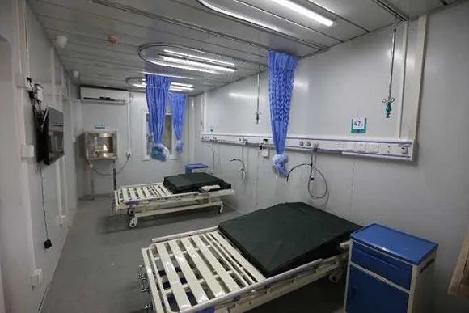
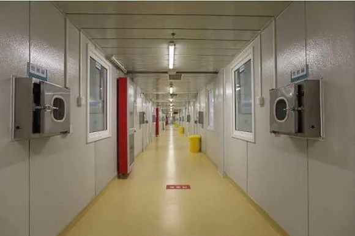

疫情总动员，各地怎么做|多地严防境外输入 湖北探索复产复工
原文链接 备份链接 【财新网】（记者 张兰太）全国境内疫情呈现向好势头，3月6日0-24时，31个省份和“重灾区”湖北新增确诊病例双双首度降至两位数（共99例，其中湖北74例）。疫情防控取得积极成效，但近期除湖北外的其他30个省份的日新增 …

图片来源：央视新闻
记者：邓煜洲 牟缇缇 本文来源：央视新闻
“
为做好境外输入人员疫情防控工作，尽力保证市民正常工作生活秩序，北京市疫情防控领导小组决定，3月16日起，启用北京小汤山医院，主要用于境外来（返）京人员中需筛查人员、疑似病例及轻型、普通型确诊患者治疗。
”
当前新冠肺炎疫情正在扩散蔓延，北京作为重要的国际口岸，面临境外疫情输入的风险骤增。为做好境外输入人员疫情防控工作，尽力保证市民正常工作生活秩序，北京市疫情防控领导小组决定，3月16日起，启用北京小汤山医院，主要用于境外来（返）京人员中需筛查人员、疑似病例及轻型、普通型确诊患者治疗。

北京小汤山医院设床位1000余张，主要用于北京海关检疫后有风险人员的进一步医学筛查。对确诊病例或疑似病例收进医院进行治疗，对筛查后未发现异常的旅客将由目的地省份以安全适宜方式运回本地，京内旅客由各区接回，实施集中隔离医学观察14天，实现闭环运行和管理。
小汤山医院扩建区域的病房设施、实验室检测、影像检查、消毒防护、污水处理、消防安全等所有设施均已验收合格。严格按照卫生防疫标准，完成了院内区域所有通道硬隔离，并设置单独出入口，实现各病区安全独立运行。

从北京市属医院中选派了数百名医护人员，专业涵盖呼吸、感染、重症、急诊、儿科、中医、检验、放射、药剂等，已完成系统的业务及防护培训。北京小汤山医院已与其他北京市级新冠肺炎收治定点医院形成远程会诊机制，促进医疗协同，分享经验。

原文链接 备份链接 【财新网】（记者 张兰太）全国境内疫情呈现向好势头，3月6日0-24时，31个省份和“重灾区”湖北新增确诊病例双双首度降至两位数（共99例，其中湖北74例）。疫情防控取得积极成效，但近期除湖北外的其他30个省份的日新增 …
原文链接 备份链接 *************▲*************北京地坛医院是北京市新冠肺炎定点治疗医院，2020年2月3日，一名护士走过张贴着护士生活照的走廊。 （新华社/图） 全文共2934字，阅读大约需要7分钟。 于 …
原文链接 备份链接 【财新网】（记者 张兰太）全国疫情形势继续向好，除港澳台外的31个省份已连续4天新增确诊病例保持在两位数，且呈不断下降势头；目前，西藏、青海、福建、澳门、新疆、安徽等六地实现全部确诊病例“清零”，除湖北外的绝大多数省份 …
原文链接 备份链接 澎湃新闻记者 钟煜豪 日前，针对市民反映的“医院办理健康证明要求缴费100元”一事，河南邓州市政府网站刊发了涉事的邓州市第二人民医院回应称，收取的费用为胸片、血常规等检查费，不违规。 有市民此前通过网络介绍，本 …
原文链接 备份链接 图片来源：视觉中国 记者：牛其昌 “ 随着国内新增确诊病例数明显减少，多地已纷纷下调疫情应急响应等级。但鉴于全球新冠肺炎疫情防控形势的严峻性，疾控部门已经把境外疫情评估纳入工作范畴。 ” 新冠肺炎疫情正在全球范围内加速 …